A decade ago, "otaku fashion" described, with a certain unkindness, what anime fans wore when they weren't thinking about clothes: faded flannel shirts, cargo pants from a discount store, a backpack heavy with plastic figures they'd rather be organizing at home. The word "otaku" carried social weight in Japan — it marked a person who had chosen their interior world over the exterior one, and whose appearance confirmed the choice. That era is over. In 2026, the otaku is the one setting the agenda.
The evidence is everywhere. BAPE reworked its most iconic hoodie with blushing anime faces for a drop that debuted at Miami Art Week. Nike encoded Gundam armor colors into an SB Dunk that sold out in minutes and now trades at three times retail. MrBeast — the most-subscribed individual on YouTube — launched a Naruto collaboration in February 2026 that treated the franchise as seriously as any luxury licensing deal. Uniqlo marked Shueisha's centennial with a UT collection spanning every major manga property of the last fifty years. These are not novelty items. They are the cultural center of gravity.
This guide maps the full territory: the philosophical foundations of otaku style, the key silhouettes and subcultures driving it, the collaborations that proved its commercial weight, and the Tokyo districts where the next generation of ideas is already forming.
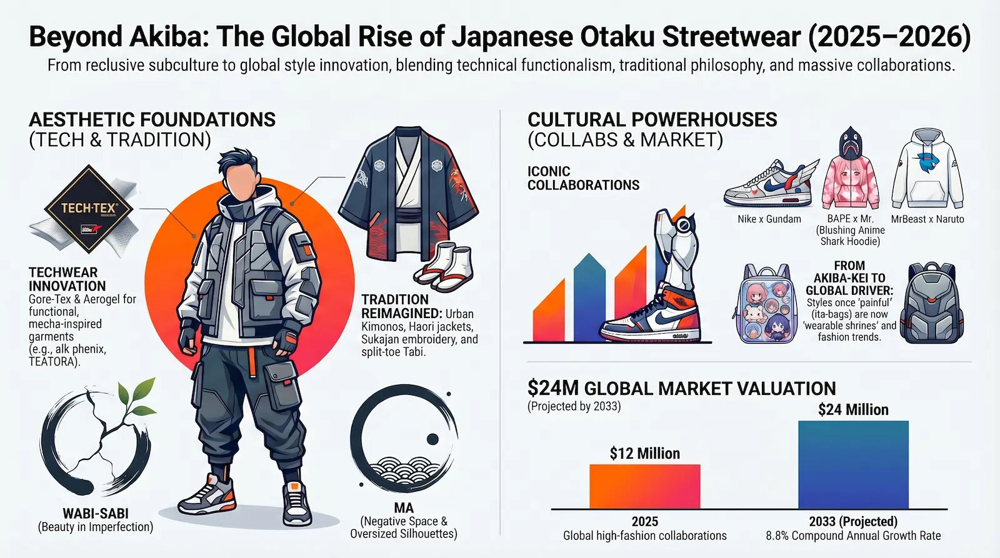
The four aesthetic pillars of otaku fashion in 2026 — and the market forces driving them global.
Contents
- The Identity Shift — From Stigma to Style Authority
- Techwear & the Mecha-Aesthetic — Gore-Tex meets Ghost in the Shell
- Tradition Reimagined — Urban Kimonos, Haori, Sukajan & Tabi
- Wabi-Sabi & Ma — The Philosophy in the Cut
- The Collaborations That Changed Everything — BAPE, Nike, MrBeast, Uniqlo
- The Ita-Bag — From "Painful" to Wearable Shrine
- Tokyo's Five Fashion Districts — Where Otaku Style Is Made
- The Buyer's Guide — How to Shop It from Anywhere
The Identity Shift — From Stigma to Style Authority
The "Akiba-kei" style — named after Akihabara, Tokyo's electronics and anime district — was the original otaku uniform. Flannel shirts, worn sneakers, glasses, a tote bag from a game center. The look was not designed; it was simply what happened when someone stopped caring about clothes because they cared intensely about something else. It was the absence of a style statement that became, paradoxically, a style statement in itself — one that the fashion industry spent years ignoring.
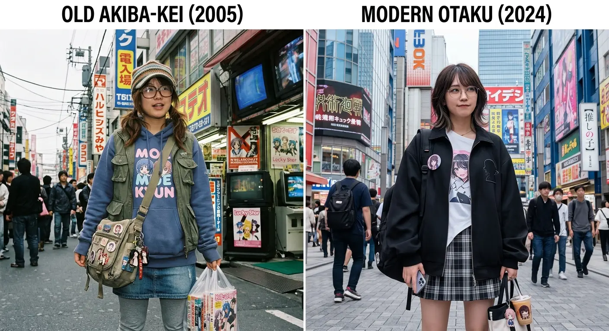
The shift began with streaming. When Crunchyroll, Netflix, and their competitors made anime globally accessible, the fan base stopped being geographically concentrated in Japanese cities and convention circuits. Characters like Gojo Satoru from Jujutsu Kaisen, Yor Forger from Spy x Family, and Nezuko Kamado from Demon Slayer became genuine style references for Gen Z audiences who had never set foot in Akihabara. Fashion brands took notice of a demographic that was large, passionate, and underserved by existing retail.
What emerged from this recognition was something more interesting than licensed T-shirts: a new category of clothing that used anime and manga aesthetics as a design language rather than a surface decoration. The modern otaku, as researchers have begun to describe them, is a "prosumer" — not simply consuming cultural products but actively adding to their cultural value through the choices they make about how to dress. Clothing becomes, in this framework, what analysts call "urban armor": a deliberate statement of identity that protects and projects simultaneously.
Techwear & the Mecha-Aesthetic
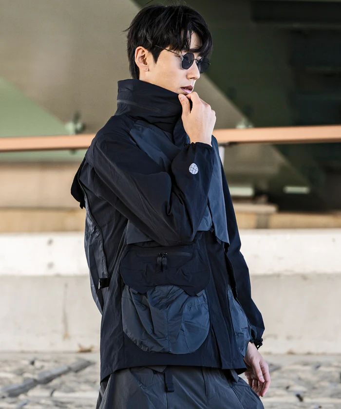
If one style best captures the conversion of anime into everyday clothing, it is techwear. The connection is not superficial. Cyberpunk anime — Ghost in the Shell, Akira, Mobile Suit Gundam — depicted characters navigating hostile urban environments in layered, functional, technically sophisticated clothing. That aesthetic, filtered through thirty years of fan imagination, produced a demand for clothing that looked and performed like the gear those characters wore. Japanese brands answered it with unusual seriousness.
Techwear in 2026 is not costume. Leading Japanese brands — alk phenix, TEÄTORA, D-VEC, DEVOA, and MOUT RECON TAILOR — use Gore-Tex, Aerogel insulation, Ventile waterproofing, and 3-way stretch nylon in garments designed for the actual demands of urban life: long commutes in unpredictable weather, transit systems that alternate between cold platforms and overheated carriages, office environments that require a degree of formality. A TEÄTORA jacket is built so that a creative professional can wear it through a six-hour flight without wrinkling, then walk directly into a meeting. The Mecha reference is in the silhouette — layered, articulated, precise — not in a print on the chest.
Techwear — Brand Tiers by Price & Philosophy
Entry Level — MUJI: DWR-coated trousers, stretch basics with moisture resistance. ¥3,000–¥10,000 (~$30–$100). The democratic starting point for technical dressing.
Performance — Goldwin · TEÄTORA · Descente Allterrain: Arc'teryx Veilance-equivalent quality with a distinctly Japanese cut. Shells ¥40,000–¥80,000 (~$400–$800). Designed for the "creative class" commuter.
Designer / Artisanal — DEVOA · The Viridi-Anne: Organic fibers combined with Schoeller technical fabrics. ¥80,000–¥150,000+ (~$800–$1,500+). Clothing as wearable sculpture.
Tactical / Niche — MOUT RECON TAILOR: All-black military construction with extremely high standards. Rare even in Japanese secondhand markets. The most uncompromising expression of the Mecha-Aesthetic in civilian clothing.
Tradition Reimagined — Urban Kimonos, Haori, Sukajan & Tabi
The second major pillar of otaku fashion is what researchers call "Wafuku-Yofuku Fusion" — the combination of traditional Japanese garments with contemporary streetwear. The results range from subtle to spectacular, but the underlying logic is consistent: these pieces carry cultural weight that no Western streetwear silhouette can replicate, and otaku audiences, who have spent years immersed in anime that draws on Japanese history and mythology, understand exactly what they are wearing and why.
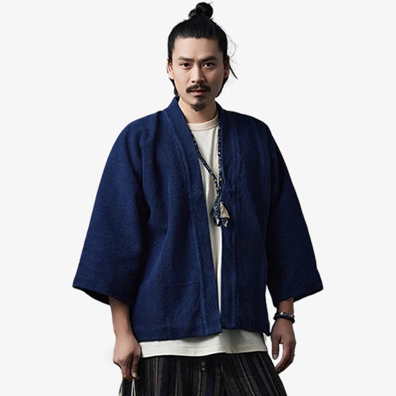
The Haori
The haori — a hip-length jacket worn open, traditionally over kimono — has become one of the defining pieces of otaku streetwear in 2026. Worn over a graphic tee, an oversized hoodie, or a technical layer, it provides exactly the kind of cultural specificity and visual depth that the style demands. Modern haori use heavier, more durable fabrics than their ceremonial predecessors — thick cotton, technical blends, occasionally denim — and often incorporate anime-adjacent graphics: dragons, traditional masks, geometric patterns rooted in Japanese textile history. The piece is worn open at the front, preserving the negative space (Ma) that is central to its aesthetic logic. Sites like My Japan Clothes (myjapanclothes.com) and FuransuParis (furansuparis.com) carry the widest selection of street-ready haori with international shipping.
The Sukajan
Sukajan jackets — satin-shell bombers with embroidered backs, descended from the souvenir jackets American servicemen commissioned in postwar Japan — are the most explicitly narrative garments in the otaku wardrobe. A sukajan tells a story: the dragon coiled on the back, the koi ascending a waterfall, the cherry blossoms over a mountain, the kanji lettering beneath. In 2026, brands like Glamb have made the sukajan central to their collaborations with anime properties — their JoJo's Bizarre Adventure and Chainsaw Man pieces use the jacket's embroidery tradition to render anime iconography with the seriousness of craft rather than the casualness of print.
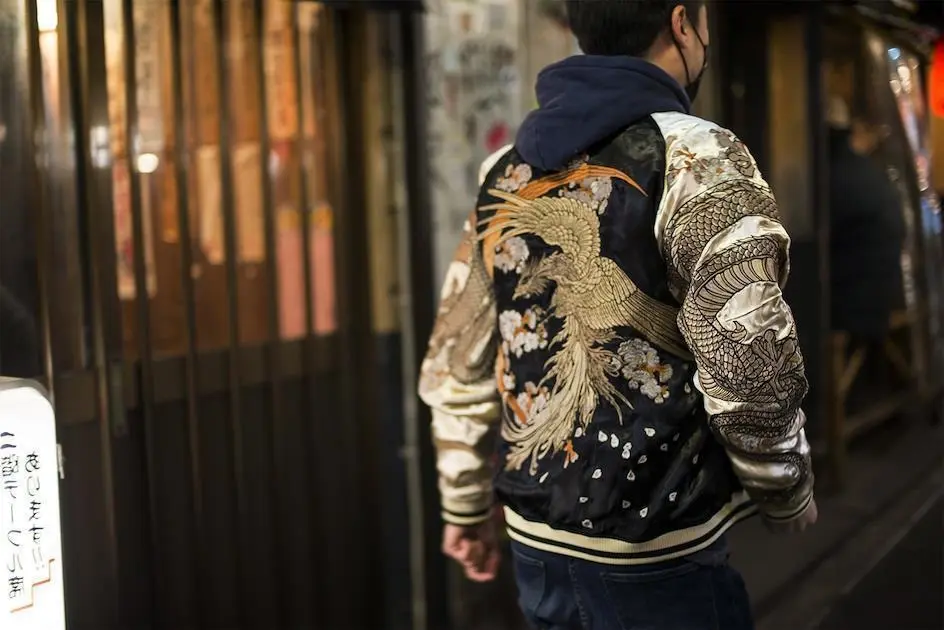
The Tabi
Tabi footwear — the split-toe design that separates the big toe from the others, originating in traditional Japanese sock construction — has moved from ceremonial context to avant-garde streetwear. Japanese brands Sou-Sou and Marugo produce modern tabi in technical fabrics, leather, and sneaker-inspired designs built for urban use. The most internationally visible expression of this design is Maison Margiela's Tabi Boot — a French luxury house that took a Japanese traditional form and made it one of the most recognizable silhouettes in contemporary high fashion. Tabi pair naturally with wide-leg trousers and haori layering; FuransuParis carries a strong international selection.
Wabi-Sabi & Ma — The Philosophy in the Cut
Beneath the surface of otaku fashion — beneath the collaborations, the embroidery, the Gore-Tex specs — runs a set of philosophical principles that distinguish Japanese streetwear from its Western counterparts. These are not marketing concepts. They are design commitments that produce measurable differences in how Japanese clothing looks and feels relative to comparable Western garments.
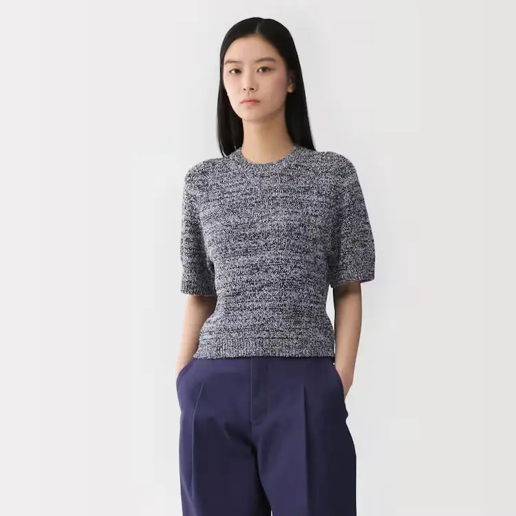
Ma (間) — literally "gap" or "pause" — is the Japanese concept of negative space used with intention. In clothing, it describes the distance between the body and the fabric. Oversized silhouettes in Japanese streetwear are not simply large — they are calibrated. The extra volume is not excess; it is the space the garment needs to express its form. TEÄTORA's "roomy" cuts and BAPE's oversized hoodies from the Mr. collaboration are both expressions of Ma: the negative space is doing as much aesthetic work as the fabric itself.
Wabi-Sabi (侘び寂び) — the acceptance of impermanence and imperfection as sources of beauty — appears in the fabric choices and color palettes that characterize Japanese minimalist fashion. MUJI is its purest commercial expression: the brand's name translates as "no-brand quality goods," and its entire philosophy is the elimination of everything that is not essential. Natural fiber weaves in earth tones; the texture of the material doing all the visual work that a logo would otherwise perform. And wander, founded by former Issey Miyake designers, applies the same philosophy to technical outdoor garments — nylons that feel like natural fiber, silhouettes that reference organic forms rather than athletic function.
The Collaborations That Changed Everything
The history of anime merchandise is a history of underestimation. For decades, licensed anime products were treated as supplementary revenue — something to sell at convention booths and specialist shops, priced low because the audience was assumed to be young and budget-constrained. The collaborations that began emerging around 2020, and which reached a new level of ambition in 2025–2026, represent the industry's belated recognition that this assumption was wrong in every direction.
BAPE × Mr. (Kaikai Kiki) — Art Week's Fashion Moment
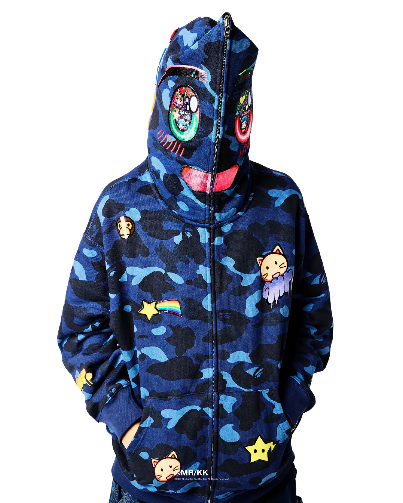
The most significant otaku fashion event of late 2025 was not a streetwear drop. It was an art show. BAPE's collaboration with Japanese artist Mr. — a central figure in Takashi Murakami's Kaikai Kiki studio — debuted at Miami Art Week in December 2025, positioning a streetwear collection within the global contemporary art market rather than the fashion retail calendar. The choice of venue was itself a statement: otaku aesthetics belong in gallery spaces, not just shopping malls.
The collection reworked BAPE essentials — the Shark Hoodie, the BAPE STA sneaker, classic T-shirts — through Mr.'s visual language, which draws from anime, video games, and the emotional intensity of digital-era Japanese youth culture. The Shark Hoodie's defining mechanism — when fully zipped, a shark face appears over the wearer's head — was reinterpreted: zip up Mr.'s version and a blushing, wide-eyed anime character face replaces the shark. The collision of aggression and vulnerability is immediate and deliberate. Mr. is known for art that depicts both innocence and instability simultaneously, and the hoodie delivers exactly that. BAPE STA sneakers carried the same character motifs onto the collectible sneaker silhouette.
Nike × Gundam — Engineering Meets Mecha
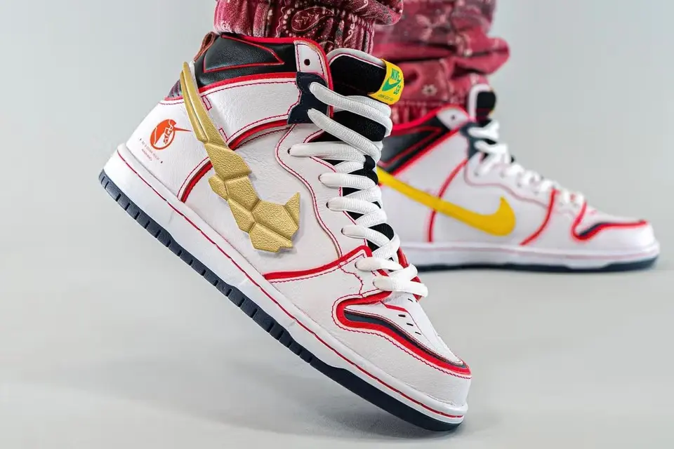
The Nike × Gundam collaboration has a prehistory that makes it more interesting than most. In 2018, Nike released an Air Max 98 in a red-white-blue colorway that read, to anyone familiar with the franchise, as an unmistakable Gundam reference — but with no official acknowledgment. It was a deliberate nod to a specific audience without the liability of a formal licensing agreement. The response told Nike everything it needed to know. The official collaboration arrived as the Nike SB Dunk High, drawn from Mobile Suit Gundam Unicorn: two colorways, "Unicorn" (white, based on the RX-0 Unicorn Gundam) and "Banshee" (black, based on the RX-0 Banshee), each with design details that reward close attention from franchise fans.
The engineering of these sneakers is the collaboration's real accomplishment. The Nike Swoosh logo on both colorways was designed to evoke the V-fin antenna on Gundam's head units — and was made detachable, allowing the wearer to remove and replace it. The heel features the Unicorn's horse emblem. The color blocking on the white version — red accent lines over white base — precisely replicates the Unicorn's panel markings. Nike released the collaboration simultaneously with a limited Gunpla model kit, explicitly bridging the sneaker collector and scale modeler audiences — two communities that overlap substantially in the otaku demographic but had rarely been addressed as one.
MrBeast × Naruto — The Globalization Proof Point
No collaboration in recent memory demonstrates the global reach of otaku fashion more clearly than MrBeast × Naruto, released in February 2026. MrBeast — the most-subscribed individual creator on YouTube, with an audience that skews young, global, and culturally omnivorous — launched a limited collection treating Naruto as seriously as any luxury brand treats a heritage collaboration. Hoodies, T-shirts, and letterman jackets with heavily embroidered back panels depicting the Naruto–Sasuke rivalry, priced at $30–$90: accessible to the fan demographic while aesthetically credible to the streetwear one. Available at mrbeast.store.
The significance is not the collection itself — the design language is straightforward graphic streetwear rather than the conceptual ambition of BAPE × Mr. — but the context in which it appeared. The world's largest individual creator treated an anime franchise as the basis for a serious merchandise collaboration rather than a novelty item. That is a data point about how widely the otaku aesthetic has distributed itself across global youth culture, and how completely the stigma that once surrounded it has dissolved.
Uniqlo UT × Shueisha — The Democratic Centennial
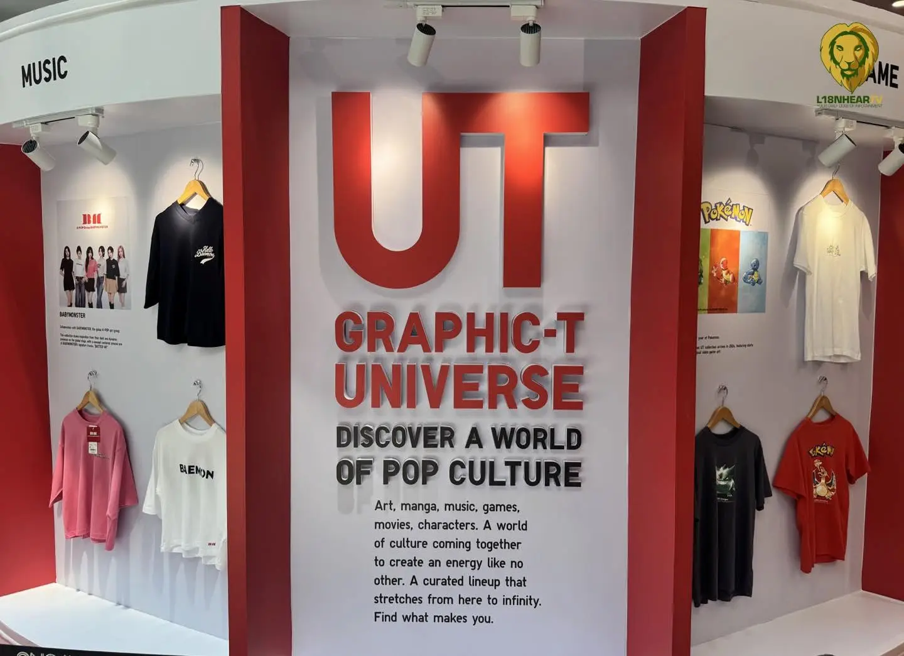
Uniqlo UT × Shueisha centennial — the largest single anime fashion event of early 2026, priced for everyone.
Uniqlo's UT line — graphic T-shirts collaborating with artists, brands, and cultural properties across a low price point — has served as the gateway through which anime aesthetics reach the widest possible consumer base for over a decade. The March 2026 Shueisha centennial collection is the largest single expression of this strategy: a comprehensive survey of every major manga property published by Shueisha over its hundred-year history, rendered in Uniqlo's characteristic clean graphic style and priced at approximately ¥1,990 (~$15–$30) per piece. Jujutsu Kaisen, Hunter x Hunter, One Piece, Dragon Ball, Bleach, Haikyu!!, and dozens more — available at uniqlo.com and in all Uniqlo stores globally. If BAPE × Mr. is otaku fashion's museum show, the Shueisha UT drop is its public library: everything, accessible to everyone.
The Ita-Bag — From "Painful" to Wearable Shrine
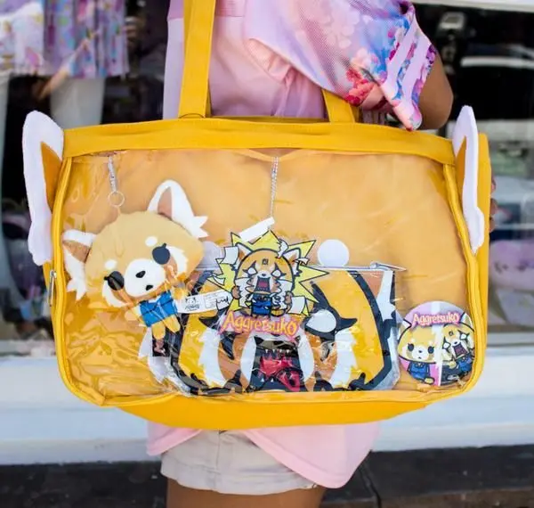
The word "ita" (痛) means "painful" in Japanese. The ita-bag takes its name from this meaning — and, historically, from the dual sense in which the label applied: painful to look at, because the bag's display of fan merchandise was considered embarrassingly excessive; and financially painful to assemble, because filling one seriously could exceed what any reasonable person would spend on a handbag. Both forms of pain have been reframed. In 2026, the ita-bag is not embarrassing. It is an art form.
The format is simple: a bag — typically a tote, backpack, or crossbody — with a transparent PVC panel on the exterior, through which the owner displays a curated collection of merchandise related to their "oshi" (most beloved character or idol). Badges, acrylic stands, keychains, small figures, rubber straps: each item chosen, arranged, and often secured with specific spatial logic. The result is what one analyst described as a "wearable shrine" — a portable altar to a fictional character that transforms a functional object into a statement of devotion and identity.
The ita-bag phenomenon has spread substantially beyond its Japanese origins. In China, it is a major trend among Gen Z and Alpha consumers across ACG (Anime, Comics, Games) fandoms. In the United States and Europe, it has migrated from convention floors to everyday carry for a generation of anime fans who no longer feel any need to conceal their interests. The economics tell their own story: the bag itself typically costs ¥3,000–¥7,000 ($30–$70). The contents — sourced from gacha machines, official merchandise stores, fan markets, and international shipping services — can accumulate to well over $1,000 for a seriously committed collector. This is the "economics of obsession" that makes otaku consumers so commercially significant: they spend on depth, not just breadth.
Where to Find Ita-Bags & Merchandise
ZenMarket (zenmarket.jp): Japan's most widely used proxy purchasing service. Access to Mercari Japan, Yahoo Auctions, and specialist otaku retailers. Essential for sourcing limited merchandise that doesn't ship internationally.
Animate (animate.co.jp): Japan's largest anime merchandise chain, with online shipping. Official licensed goods for most major franchises.
SuperGroupies (us.super-groupies.com): Premium anime-inspired accessories — bags, watches, and clothing designed around specific franchise aesthetics. International shipping available.
Tokyo's Five Fashion Districts — Where Otaku Style Is Made
Otaku fashion is not evenly distributed across Tokyo. It is concentrated in specific districts that function as distinct ecosystems — each with its own aesthetic codes, its own retail infrastructure, and its own role in the broader cultural geography of the city. Understanding them separately makes it possible to navigate Tokyo's fashion landscape with intention rather than accident.
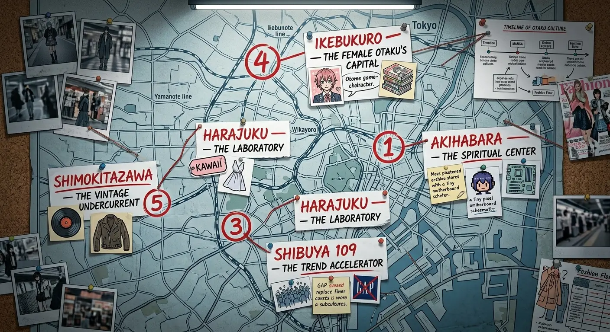
Five districts. Five roles. One city where otaku fashion is produced, refined, and consumed.
Akihabara — The Spiritual Center
Akihabara remains the ideological heart of otaku culture. Its multi-story shops — Yodobashi Camera, Akihabara Radio Kaikan, the Mandarake complex — represent the infrastructure of fandom: the place where merchandise is stocked, where limited drops are queued for, where the ita-bag's contents are sourced. The original "Akiba-kei" aesthetic was born here and remains visible in its unironic form. But Akihabara in 2026 is also a pilgrimage destination for international visitors who arrive already knowing exactly what they're looking for, having researched it online for years.
Harajuku — The Laboratory
Harajuku is where otaku aesthetics collide with streetwear culture and produce new forms. BAPE's original store is here. So is the dense retail ecosystem of Takeshita Street and the more curated shopping of Omotesando. The "Ura-Harajuku" backstreets remain the incubation zone for brands that will be globally relevant in three years. Limited drops from brands at the intersection of anime and streetwear happen here first. The district's function is generative: it takes influences from Akihabara and recombines them into something new. By 2026, the boundary between Harajuku and Akihabara has effectively dissolved — they are two zones serving the same audience at different moments of the same cultural conversation.
Shibuya 109 — The Trend Accelerator
Shibuya 109 is the commercial engine that converts subculture into mainstream trend at speed. Its brands — including SPINNS, whose 2026 collections span Blokecore, Fairy Grunge, NEO Mori Girl, and MEN'SLIKE silhouettes — function as real-time indicators of what is moving from niche to mainstream. MEN'SLIKE, one of the most discussed trends emerging from Shibuya in 2026, involves women wearing oversized masculine silhouettes — box-shaped hoodies, cargo trousers, men's outerwear — to challenge gender coding through the specific mechanism of Ma: the negative space of the oversized silhouette as deliberate statement.
Ikebukuro — The Female Otaku's Capital
Where Akihabara skews toward male otaku consumers, Ikebukuro is the center of female anime and manga fandom in Tokyo. The ita-bag culture is most concentrated here; so are the Otome game fandoms, the idol merchandise stores, and the collaborative cafes that serve as pop-up retail environments for specific anime properties. The earth music & ecology Japan Label brand's collaborations with Hatsune Miku and KAITO — dresses, blouses, and accessories that incorporate anime aesthetics into wearable everyday clothing priced at ¥5,000–¥7,000 — represent the Ikebukuro market at its most commercially refined.
Shimokitazawa — The Vintage Undercurrent
Shimokitazawa is the outlier in this geography: a neighborhood built on vintage clothing, independent music, and deliberate distance from mainstream commercial culture. Its relationship to otaku fashion is indirect but real. The "neo-vintage" approach to anime merchandise — sourcing discontinued or early-edition pieces from secondhand shops — has its spiritual home here. Brands like DAIRIKU, which draws from 1980s and 90s anime films to create high-end streetwear with nostalgic visual weight, have shown pop-up presence in this area. For visitors with time, Shimokitazawa is where the next wave of the aesthetic is being quietly assembled.
The Buyer's Guide — How to Shop It from Anywhere
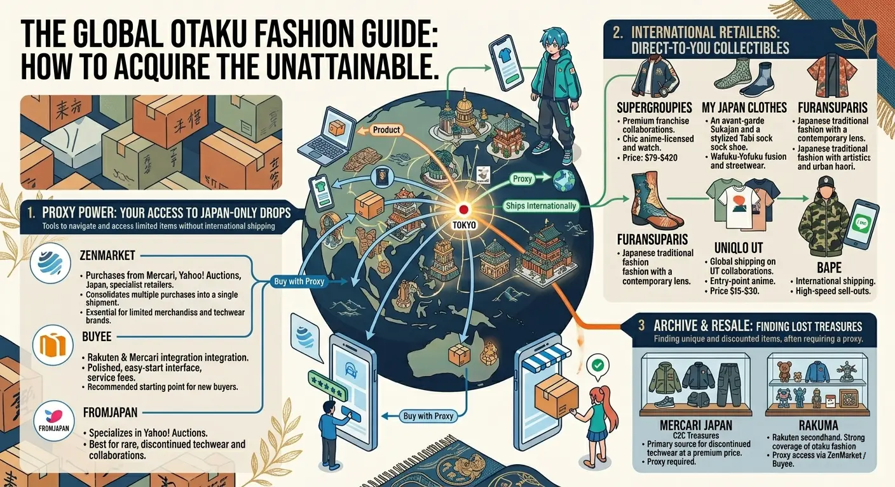
The structural challenge of otaku fashion for international buyers is distribution. Japan's most interesting clothing rarely reaches Western retail — it is sold through Japanese platforms, physical stores in Tokyo, and limited-edition drops with no international shipping. The tools for navigating this are now sufficiently mature that geographic distance is a solvable problem rather than an absolute barrier.
Proxy Purchasing Services — For Japan-Only Drops
ZenMarket (zenmarket.jp): Purchases from Mercari Japan, Yahoo Auctions Japan, and specialist retailers. Consolidates multiple purchases into a single shipment. Essential for limited merchandise and techwear brands without international shipping.
Buyee (buyee.jp): Strong Rakuten and Mercari Japan integration. More polished interface than ZenMarket; slightly higher service fees. The recommended starting point for buyers new to proxy purchasing.
FromJapan (fromjapan.co.jp): Specializes in Yahoo Auctions Japan. Best for rare or discontinued pieces at auction, including early BAPE collaborations and discontinued techwear runs.
International-Shipping Japanese Retailers
SuperGroupies (us.super-groupies.com): Premium anime-licensed fashion — jackets, watches, bags, and accessories designed around specific franchise aesthetics. Ships internationally. Price range: $79–$420.
My Japan Clothes (myjapanclothes.com): Wide selection of haori, sukajan, and kimono-inspired streetwear with international shipping. The most accessible source for Wafuku-Yofuku fusion pieces outside Japan.
FuransuParis (furansuparis.com): Curates Japanese traditional fashion with a contemporary streetwear lens. Strong selection of tabi footwear and urban haori. Ships internationally.
Uniqlo UT (uniqlo.com): Global shipping on all UT collaborations. The entry point for anime fashion at accessible price points ($15–$30). No proxy required.
BAPE (bape.com): International shipping on selected drops. Monitor the brand's LINE account and Instagram for collaboration announcements — drops sell out within hours of going live.
Secondhand & Resale Platforms
Mercari Japan (mercari.com/jp): Japan's largest consumer-to-consumer marketplace. Requires proxy service for international buyers. Primary source for discontinued techwear from alk phenix, TEÄTORA, and DEVOA at reduced prices.
Rakuma: Rakuten's secondhand platform. Strong coverage of brand-name otaku fashion and collectibles. Proxy access via ZenMarket or Buyee.
Why the Subculture Became the Culture
Otaku fashion's rise is not only a story about clothing. It is a story about how subcultures acquire institutional legitimacy — and what that legitimacy costs. For decades, otaku culture survived precisely because mainstream culture ignored it. The moment brands began investing seriously in anime collaborations was also the moment that the culture's internal logic — its emphasis on deep knowledge, on earned community membership, on the meaningful distinction between casual fans and true devotees — came under the pressure that mainstreaming always applies.
The ita-bag's transformation from "painful" to aspirational is legible in both directions. It represents genuine cultural recognition: a mode of self-expression that was once socially penalized is now celebrated by the same mainstream culture that once mocked it. But it also represents the flattening that accompanies that recognition — the loss of specific weight that the practice carried when it was genuinely subcultural, when displaying your oshi on your bag was a declaration of community belonging rather than a fashion statement.
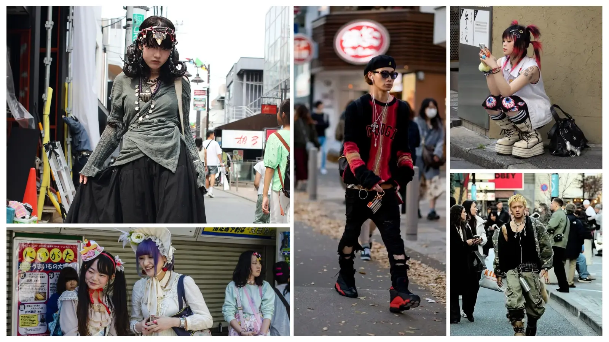
The defining shift of 2026: otaku fashion worn in the ordinary city, without apology, without explanation.
What is not in question is the creative accomplishment. The best Japanese techwear represents a genuine synthesis of engineering and aesthetic philosophy that has no precise equivalent elsewhere in global fashion. The haori and sukajan, translated into contemporary streetwear, carry cultural meaning that no amount of Western trend-chasing can replicate. The BAPE × Mr. collaboration, presented at an art fair, made an argument about the seriousness of anime aesthetics that contemporary art culture had no credible counter to. The market projections — $12 million in 2025 to $24 million by 2033 — are not a cause of this. They are a consequence of it.
The culture has been building since the first person carried a bag full of figures through Akihabara and refused to be embarrassed about it. The rest of the world is only now catching up.